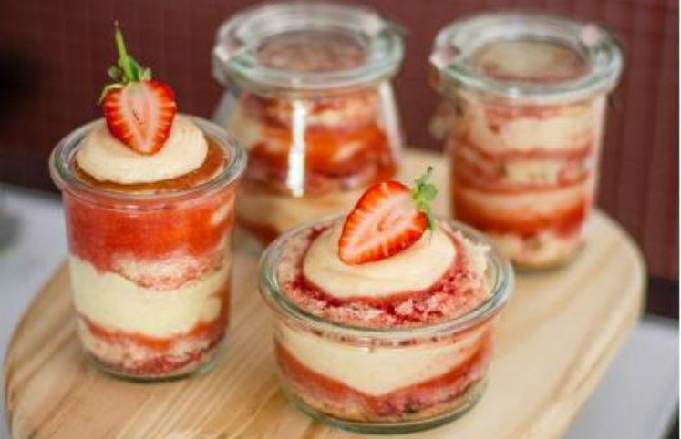

" O Bene cake nasceu de uma paixão pela cozinha, a chef proprietária Maria Bernadette, nascida em São Paulo, em meio dos bolos e doces de sua avó Portuguesa, o qual herdou o talento e o prazer pela confeitaria"
Abertura: Segunda á Sabado das 08h ás 18h
Endereço: Rua dos Doces, 666